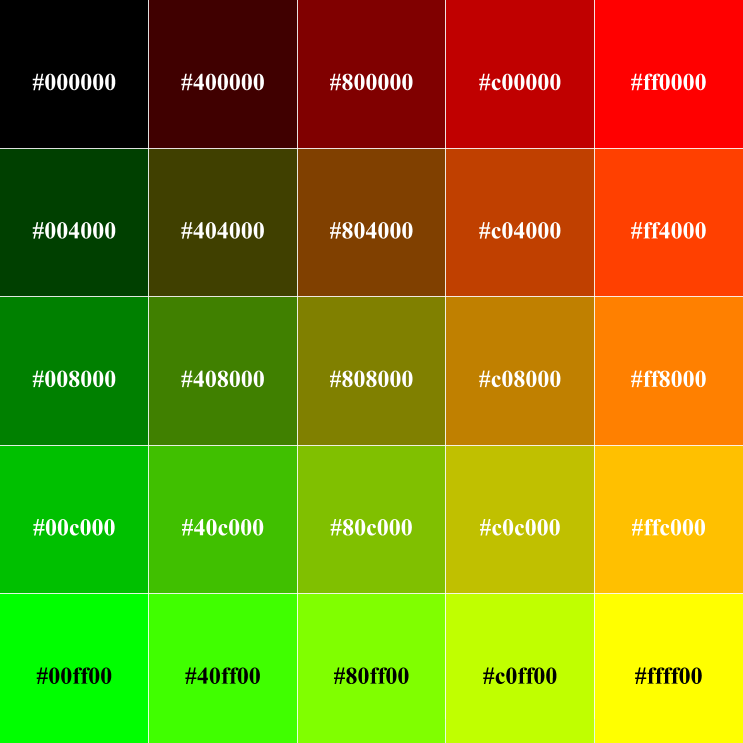
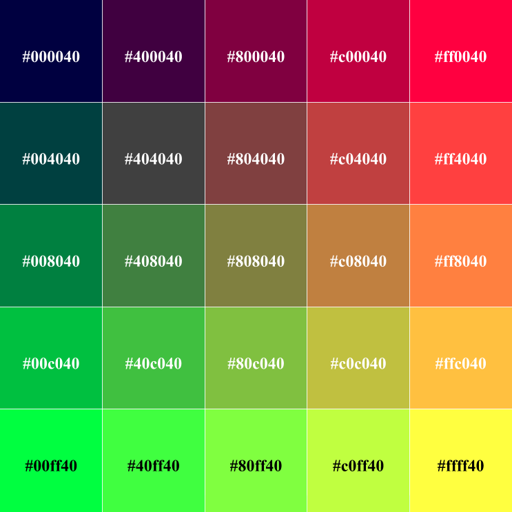
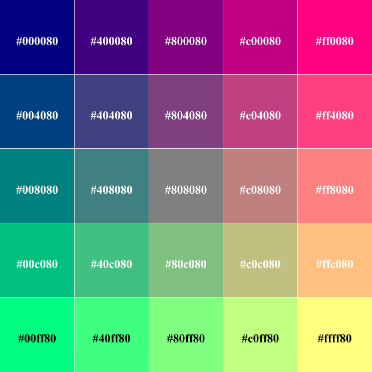
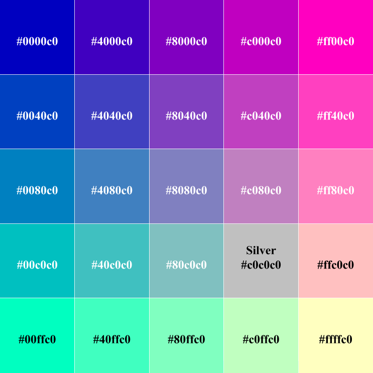
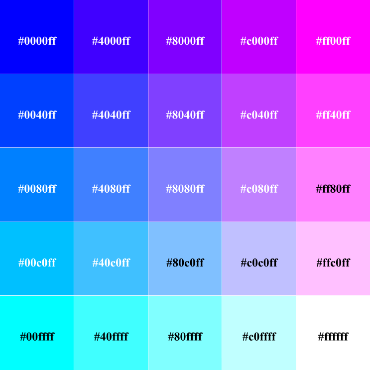

Base 5 Color Gamut
A base 5 color gamut allows for five possible levels (including absence) of each color in RGB. This allows for a complete palette of 53, or 125 colors.
The base five chart includes all the colors from the ternary (base three) chart, and, as such, includes the fifteen HTML 4.01 colors that were present inside it. This palette, however, includes the sixteenth color that was specified by the W3C: silver (#c0c0c0), which is labeled where it appears in the images below.
| Intensity | RGB Decimal | Hexadecimal |
|---|---|---|
| 0 (off) | 0 | 00 |
| 1 | 64 | 40 |
| 2 | 128 | 80 |
| 3 | 192 | c0 |
| 4 (full) | 255 | ff |





Finally--the base six color gamut
Reference
World Wide Web Consortium. (1999). Basic HTML data types. In HTML 4.01 Specification. Retrieved from https://www.w3.org/TR/REC-html40/types.html#h-6.5